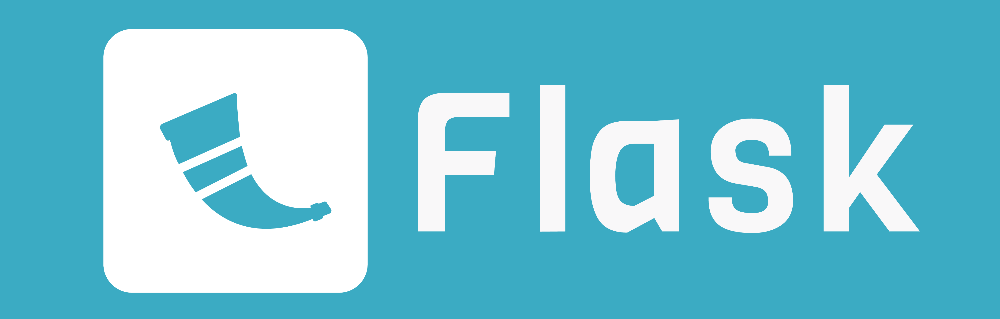
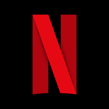

Framework
Python com Django ou Flask usado por grandes empresas
Os frameworks são ferramentas poderosas no desenvolvimento de software garantido:
🔹 Mais rapidez no desenvolvimento Com uma estrutura pronta e funcionalidades pré-definidas, você reduz o tempo de codificação e pode lançar seu projeto mais cedo.
🔹 Código padronizado Seguir um estilo consistente facilita a colaboração entre desenvolvedores e a manutenção do código no futuro.
🔹 Reutilização de componentes
🔹 Segurança e atualizações Atualizações frequentes ajudam a corrigir falhas de segurança e trazer melhorias contínuas.
🔹 Comunidade ativa Frameworks populares contam com programadores que compartilham conhecimento, criam tutoriais e ajudam com dúvidas.
Django

Um Framework complexo mas com grande potencial usado por grandes empresas como:

Flask
Um framework mais simples e flexivel perfeito para projetos menores como utilizado por empresas como:
Saiba mais com o podcast abaixo
Gabriella
Desing da Logo, Gravação do Podcast, Roteiro, edição.
Gustavo
Pesquisa, Gravação do Podcast, produção do site.
Kaique
Pesquisa, Gravação do Podcast,edição.
Keren
Formatação, Gravação do Podcast, Edição, produção do site